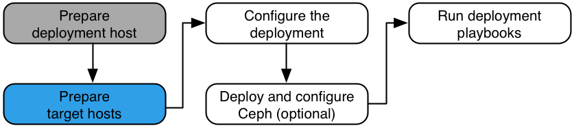

Target hosts#
The Rackspace Private Cloud Powered By OpenStack (RPCO) installation process requires at least five target hosts to contain the OpenStack environment and supporting infrastructure. Perform the following tasks On each target host:
- Name the target hosts
- Install the operating system
- Configure Secure Shell (SSH) keys
- Configure the operating system
- Configure LVM volume groups.
- Configure the network.
Name the target hosts#
In a Rackspace data center, target hosts must have a correctly formatted name when running an Ubuntu Server 16.04 LTS (Xenial Xerus) 64-bit operating system. The host naming convention includes the CORE device ID number, the host category, and host number. A host number, also known as a node index number, must consist of three digits for hosts running compute services, and two digits for all other categories. Note that it might be necessary to change the Ubuntu hostname configuration files to reflect the correct naming conventions.
The format for the name is as follows, where COREID is the CORE
device ID number, category is the host category, and NNN is
the host number:
COREID-categoryNNN
For category, use one of the following names:
cindercomputeinfraloggingswiftstorage
The following list shows examples of several target hosts with the appropriate naming convention applied:
# hostname 900089-compute001 900090-compute002 … 900200-compute112 900201-cinder01 900202-cinder02 … 900215-cinder15 900085-infra01 900086-infra02 900087-infra03 900088-logging01
Install the operating system#
Install the Ubuntu 16.04 LTS (Xenial Xerus) 64-bit operating system on the target host with at least one network interface configured to access the Internet or suitable local repositories.
Note
On target hosts without local (console) access, we recommend adding the Secure Shell (SSH) server packages to the installation.
Configure Secure Shell (SSH) keys#
Ansible uses Secure Shell (SSH) to connect the deployment and target hosts.
- Copy the contents of the public key file on the deployment host to
the
/root/.ssh/authorized_keyson each target host. - Test public key authentication from the deployment host to each target host. SSH should provide a shell without asking for a password.
Configure the operating system#
Check the kernel version, install additional software packages, and configure the network time protocol (NTP).
Note
NTP is no longer needed since RPC-OpenStack 12.2. The ansible-hardening role (previously called openstack-ansible-security) installs and configures chrony to provide network time services on all deployments by default since 12.2.
Install additional software packages if they were not installed during the operating system installation:
For all deployments: # apt-get -y install bridge-utils debootstrap ifenslave ifenslave-2.6 \ lsof lvm2 openssh-server sudo tcpdump vlan For deployments before RPC-OpenStack 12.2: # apt-get -y install ntp ntpdate
Note
During the installation of RPCO, unattended upgrades are disabled. For long-running systems, periodically check for and apply security updates.
Add the appropriate kernel modules to the
/etc/modulesfile to enable VLAN and bond interfaces:# echo 'bonding' >> /etc/modules # echo '8021q' >> /etc/modules
If you are using the service network, also install the following software package to manage iptables firewall rules:
# apt-get -y install iptables-persistentConfigure NTP to synchronize with a suitable time source (if deploying an RPC-OpenStack version older than 12.2).
Reboot the host to activate the changes.
Configure LVM#
Logical Volume Manager (LVM) enables a single device to be split into multiple logical volumes that appear as a physical storage device to the operating system. The Block Storage (cinder) service, and the LXC containers that run the OpenStack infrastructure, can optionally use LVM for their data storage.
To use the optional Block Storage (cinder) service, create an LVM volume group named
cinder-volumeson the Block Storage host. Specify a metadata size of 2048 during physical volume creation. For example:# pvcreate --metadatasize 2048 physical_volume_device_path # vgcreate cinder-volumes physical_volume_device_path
Optionally, create an LVM volume group named
lxcfor container file systems. If thelxcvolume group does not exist, containers are automatically installed to the file system under/var/lib/lxcby default.
Configure the network#
Although Ansible automates most deployment operations, networking on target hosts requires manual configuration because it can vary for each environment. The instructions in this section use a reference architecture with example network interface names, networks, and IP addresses. Modify these values as needed for your particular environment.
The reference architecture for target hosts contains the following components:
A
bond0interface using two physical interfaces. Avoid using more than one port on network interface cards that contain multiple ports. The example configuration useseth0andeth2; actual interface names can vary depending on hardware and drivers. Configure thebond0interface with a static IP address on the host management network.A
bond1interface using two physical interfaces. Avoid using more than one port on network interface cards containing multiple ports. The example configuration useseth1andeth3; actual interface names can vary depending on hardware and drivers. Configure thebond1interface without an IP address.Note
This component is recommended but not required for Block Storage target hosts.
A container management network subinterface on the
bond0interface andbr-mgmtbridge with a static IP address.The OpenStack Networking VXLAN subinterface on the
bond1interface andbr-vxlanbridge with a static IP address.Note
This component is recommended but not required for Block Storage target hosts.
The OpenStack Networking VLAN
br-vlanbridge on thebond1interface without an IP address.Note
This component is recommended but not required for Block Storage target hosts.
The reference architecture for target hosts can also contain the following optional components:
Storage network subinterface on the
bond0interface andbr-storagebridge with a static IP address.Service network
br-snetbridge with a static IP address of 172.29.248.1/22.Note
This network applies to Rackspace data centers only.
Bridges on all hosts use the same static IP address and network mask.
For more information, see OpenStack-Ansible Networking.
Configure the customer network based on the reference architecture#
Modify the network interfaces file (initially based on the reference
architecture) to fit the customer environment. After establishing
initial host management network connectivity by using the bond0
interface, modify the /etc/network/interfaces file as described in
the following procedure.
Note
For simplicity, the reference architecture assumes that all target hosts contain the same network interfaces.
The
bond0interface should not require additional configuration after handoff from the deployment team to the customer.
Modify the network interfaces file
Modify the physical interfaces:
# Physical interface 1 auto eth0 iface eth0 inet manual bond-master bond0 bond-primary eth0 # Physical interface 2 auto eth1 iface eth1 inet manual bond-master bond1 bond-primary eth1 # Physical interface 3 auto eth2 iface eth2 inet manual bond-master bond0 # Physical interface 4 auto eth3 iface eth3 inet manual bond-master bond1
# Physical interface 5 (Service network, Rackspace datacenters only) auto eth4 iface eth4 inet static address SNET_IP_ADDRESS netmask SNET_NETMASK ...
Note
This service network interface should not require additional configuration after handoff from the deployment team to the customer.
Modify the bonding interfaces. Replace
HOST_IP_ADDRESS,HOST_NETMASK,HOST_GATEWAY, andHOST_DNS_SERVERSwith the appropriate configuration for the host management network.# Bond interface 0 (physical interfaces 1 and 3) auto bond0 iface bond0 inet static bond-slaves eth0 eth2 bond-mode active-backup bond-miimon 100 bond-downdelay 200 bond-updelay 200 address HOST_IP_ADDRESS netmask HOST_NETMASK gateway HOST_GATEWAY dns-nameservers HOST_DNS_SERVERS # Bond interface 1 (physical interfaces 2 and 4) auto bond1 iface bond1 inet manual bond-slaves eth1 eth3 bond-mode active-backup bond-miimon 100 bond-downdelay 250 bond-updelay 250
Modify the logical (VLAN) interfaces. Replace
*_VLAN_IDwith the appropriate configuration for the environment.# Container management VLAN interface iface bond0.CONTAINER_MGMT_VLAN_ID inet manual # OpenStack Networking VXLAN (tunnel/overlay) VLAN interface iface bond1.TUNNEL_VLAN_ID inet manual # Storage network VLAN interface (optional) iface bond0.STORAGE_VLAN_ID inet manual
Modify the bridge devices. Replace
_VLAN_ID,_BRIDGE_IP_ADDRESS, and_BRIDGE_NETMASK,_BRIDGE_DNS_SERVERSwith the appropriate configuration for the environment.# Container management bridge auto br-mgmt iface br-mgmt inet static bridge_stp off bridge_waitport 0 bridge_fd 0 # Bridge port references tagged interface bridge_ports bond0.CONTAINER_MGMT_VLAN_ID address CONTAINER_MGMT_BRIDGE_IP_ADDRESS netmask CONTAINER_MGMT_BRIDGE_NETMASK dns-nameservers CONTAINER_MGMT_BRIDGE_DNS_SERVERS # OpenStack Networking VXLAN (tunnel/overlay) bridge auto br-vxlan iface br-vxlan inet static bridge_stp off bridge_waitport 0 bridge_fd 0 # Bridge port references tagged interface bridge_ports bond1.TUNNEL_VLAN_ID address TUNNEL_BRIDGE_IP_ADDRESS netmask TUNNEL_BRIDGE_NETMASK # OpenStack Networking VLAN bridge auto br-vlan iface br-vlan inet manual bridge_stp off bridge_waitport 0 bridge_fd 0 # Bridge port references untagged interface bridge_ports bond1 # Storage bridge (optional) auto br-storage iface br-storage inet static bridge_stp off bridge_waitport 0 bridge_fd 0 # Bridge port reference tagged interface bridge_ports bond0.STORAGE_VLAN_ID address STORAGE_BRIDGE_IP_ADDRESS netmask STORAGE_BRIDGE_NETMASK
# Service bridge (Rackspace datacenters only) auto br-snet iface br-snet inet static bridge_stp off bridge_waitport 0 bridge_fd 0 # No bridge port on this bridge address 172.29.248.1 netmask 255.255.252.0
Add service network iptables rules
Configure the rules:
# iptables -t nat -A POSTROUTING -o eth4 -j MASQUERADEMake the rules persistent:
# iptables-save > /etc/iptables/rules.v4
Configure the network on a target host#
This example uses the following parameters to configure networking on a single target host. For visual representations of these parameters in the architecture, see Infrastructure services target hosts, Compute target hosts, and Block Storage target hosts.
Note
For simplicity, this example assumes that all target hosts contain the same network interfaces.
- VLANs:
- Host management: Untagged/Native
- Container management: 10
- Tunnels: 30
- Storage: 20
- Networks:
- Host management: 10.240.0.0/22
- Container management: 172.29.236.0/22
- Tunnel: 172.29.240.0/22
- Storage: 172.29.244.0/22
- Addresses:
- Host management: 10.240.0.11
- Host management gateway: 10.240.0.1
- DNS servers: 69.20.0.164 69.20.0.196
- Container management: 172.29.236.11
- Tunnel: 172.29.240.11
- Storage: 172.29.244.11
For reference, here are the contents of the
/etc/network/interfaces file:
# Physical interface 1 auto em0 iface em0 inet manual bond-master bond0 bond-primary em0 # Physical interface 2 auto em1 iface em1 inet manual bond-master bond1 bond-primary em1 # Physical interface 3 auto em2 iface em2 inet manual bond-master bond0 # Physical interface 4 auto em3 iface em3 inet manual bond-master bond1# Physical interface 5 (Service network, Rackspace datacenters only) auto em4 iface em4 inet static address SNET_IP_ADDRESS netmask SNET_NETMASK ...# Bond interface 0 (physical interfaces 1 and 3) auto bond0 iface bond0 inet static bond-slaves em0 em2 bond-mode active-backup bond-miimon 100 bond-downdelay 200 bond-updelay 200 address 10.240.0.11 netmask 255.255.252.0 gateway 10.240.0.1 dns-nameservers 69.20.0.164 69.20.0.196 # Bond interface 1 (physical interfaces 2 and 4) auto bond1 iface bond1 inet manual bond-slaves em1 em3 bond-mode active-backup bond-miimon 100 bond-downdelay 250 bond-updelay 250 # Container management VLAN interface iface bond0.10 inet manual # OpenStack Networking VXLAN (tunnel/overlay) VLAN interface iface bond1.30 inet manual # Storage network VLAN interface (optional) iface bond0.20 inet manual # Container management bridge auto br-mgmt iface br-mgmt inet static bridge_stp off bridge_waitport 0 bridge_fd 0 # Bridge port references tagged interface bridge_ports bond0.10 address 172.29.236.11 netmask 255.255.252.0 dns-nameservers 69.20.0.164 69.20.0.196 # OpenStack Networking VXLAN (tunnel/overlay) bridge auto br-vxlan iface br-vxlan inet static bridge_stp off bridge_waitport 0 bridge_fd 0 # Bridge port references tagged interface bridge_ports bond1.30 address 172.29.240.11 netmask 255.255.252.0 # OpenStack Networking VLAN bridge auto br-vlan iface br-vlan inet manual bridge_stp off bridge_waitport 0 bridge_fd 0 # Bridge port references untagged interface bridge_ports bond1 # Storage bridge (optional) auto br-storage iface br-storage inet static bridge_stp off bridge_waitport 0 bridge_fd 0 # Bridge port reference tagged interface bridge_ports bond0.20 address 172.29.244.11 netmask 255.255.252.0# Service bridge (Rackspace datacenters only) auto br-snet iface br-snet inet static bridge_stp off bridge_waitport 0 bridge_fd 0 # No bridge port on this bridge address 172.29.248.1 netmask 255.255.252.0
In non-Rackspace data centers, comment out the service network
configuration in /etc/openstack_deploy/openstack_user_config.yml,
as follows:
# CIDR used in the Service network # snet: 172.29.248.0/22 #- network: # group_binds: # - glance_api # - nova_compute # - neutron_linuxbridge_agent # container_bridge: "br-snet" # container_interface: "em3" # ip_from_q: "snet"